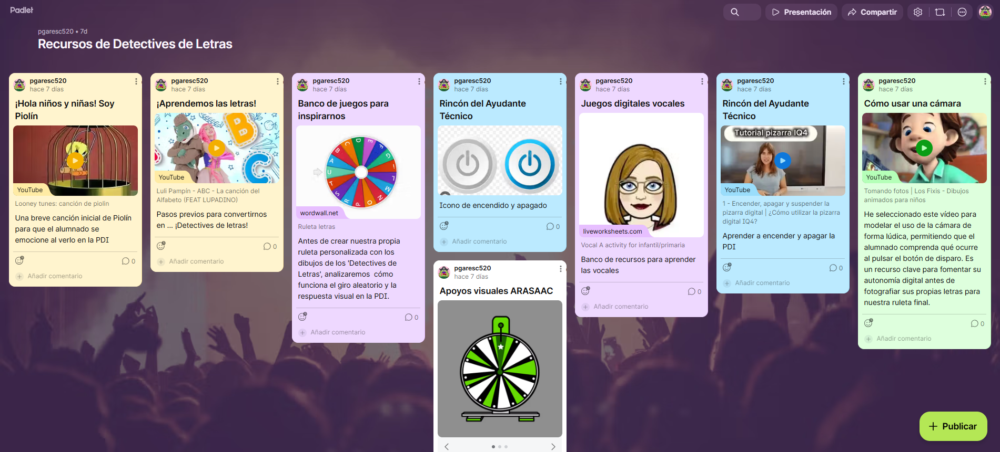
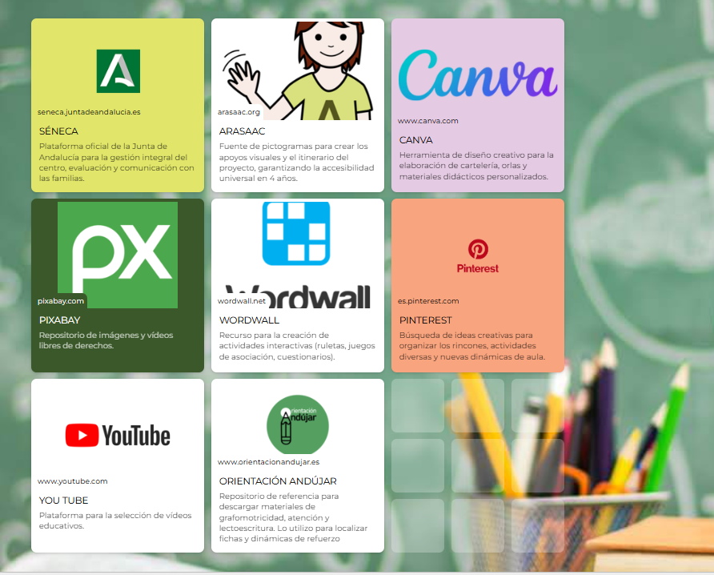

Curación de contenidos
Para que nuestra misión de detectives sea un éxito, hemos organizado todos los recursos digitales en dos espacios diferentes:
🔍 1. Muro de Recursos para el Alumnado (Padlet)
En este espacio, los pequeños detectives encontrarán los vídeos de Piolín, juegos de letras y ejemplos de sus compañeros. Es un entorno visual y seguro.
Acceso al muro: Recursos de Detectives de Letras

🛠️ 2. Panel de Herramientas para el Docente (Symbaloo)
Este es el rincón del profesorado, donde se organizan las aplicaciones para gestionar la clase, crear los juegos de Wordwall y evaluar el proyecto.
Acceso al panel: Recursos y Herramientas SdA
